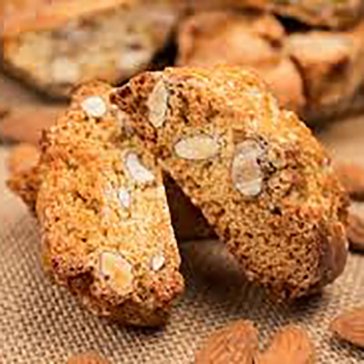

I grew up in a bit of an odd home. My parents are immigrants from Egypt, and although I ate a lot of Egyptian food growing up, my mother also liked to experiment with food from other cultures. I've been meaning to get her recipes down and organized in one place for a while, so here they are!
Quaresimale
My mother made these over and over to get the perfect recipe. She now gives them out at christmas.

1 C white sugar
1 C brown sugar
2 C all purpose flour
1 t baking powder
1/8 t cinnamon
3 T unsalted butter, softened
3 C whole almonds with skin
2 beaten eggs
3 T pure vanilla
1 beaten egg mixed with 1 T water, for egg wash
Preheat oven to 360 F. Put brown sugar, white sugar, flour, cinnamon, baking powder, butter, and almonds in a large mixing bowl. With mixer on low speed, add beaten eggs and vanilla. Mix just until dough holds together. Put dough on a floured surface. Cut in half. Roll each piece into a log and place on parchment-lined cookie sheet. Flatten each log slightly with palm of hand. Lightly brush the top of each log with egg wash. Bake for 25 mins or until firm to the touch. Remove from oven. Cut dough diagonally into biscotti. Return to 300 F oven until sufficiently dry.